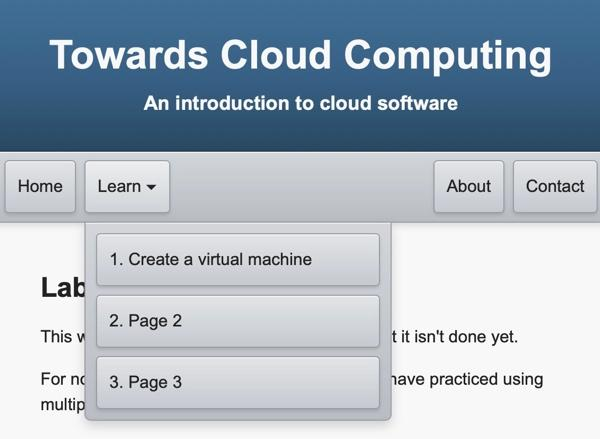

Towards Cloud Computing
Final Project for IST 541: Interactive Media, 2026
Noah Kevy
Description
The Cloud enables individuals and companies alike to exploit the availability and scale of vast networks of computers. It has become an essential part of software development. But more than that, it affects how people live and work. This project will help people to experience the cloud for themselves. Though it only provides an introduction, after engaging with the material herein, learners will be in a good position to continue exploring.
This document describes a website that will contain six pages, four of which are dedicated to teaching about cloud-based computers. The website will be publicly available, but it is intended for individuals with an interest in computers and computing.
Changes & Updates
The scope of this project changed. As of October 18, 2026, the project only provides instruction on the following topics: creating a virtual machine (VM) on Google Cloud, using ssh and ssh-keygen, and logging into a VM on Google Cloud. The initial project was overly ambitious, so teaching additional Linux commands, such as ls -lt, has been tabled for a later date. As such, the number of terminal learning objectives was reduced from three to two.
Target Audience
Students in high school who have some experience with programming will likely benefit from this work. Undergraduate college students may have some coding experience without yet knowing much about virtual machines or the cloud. Generally, this project is intended for people who are interested in writing software in the cloud and who have some experience with programming. As such, even non-technical professionals may find it useful, especially if they collaborate with software developers or other similar teams. As the instruction in this project is only introductory, it will likely not appeal to those who already know about the cloud.
Audience Analysis
The audience will have most of the prerequisite knowledge to engage with this content. With guidance, they will already be able to use software, click and type. The difficulty is that they may not know much about the Linux command line interface (Chen et al., 2012). This being the case, they likely do not know much about Vim, a text editor. Both some simple command line utilities and Vim should be covered in these materials.
Learning Objectives
- Learners will be able to provision a virtual machine (VM) in Google Cloud’s Compute Engine feature using their browser.
- Learners will be able to log in to their VM using their local computer and SSH.
Design
A website will provide learners with both information on cloud computing and instructions designed to help them get started writing software in the cloud. Interactive elements will be utilized to increase engagement with essential content and facilitate retention. The instructions will be tailored to Google Cloud, and links to this cloud service provider will be included throughout the product. The website will be hosted on GitHub, using the Pages feature.
The website should be accessible to the vast majority of learners. Multiple media principles will be applied to reduce extraneous cognitive load. Also, each page and all activities will be navigable using the Enter/Return, Tab, and Shift+Tab keys. If audio or video is used, closed captions will be provided.
Navigation
The website will use a navigation bar located at the top of each page (see Figure 1). Learners or users, in this context, will begin on the Home Page. There will be six pages in total.
- Home
- About
- Contact
- Create a VM
- Practice with SSH
- Log In with SSH
The Home page and the pages that contain instruction will be grouped together on the left-hand side. About and Contact pages will be located on the right.

Outline/Storyboard
The webpages of this project are described below. At this time, only the Create a VM page has been developed.
Home
File: index.html
Description: An image and explanation of what the cloud is and why it is useful will introduce the learner to the website. Also, a list of cloud service providers (CSP) will be included alongside a slideshow of cloud service provider logos.
Media: There will be an introductory image; it should be a natural scene like the sky on a nice day. At present, this has not been completed.
Interaction: An embedded H5P slideshow will show the logos of popular cloud service providers.
About
File: about.html
Description: The context of this project will be described along with a description of the design process. The MIST program will be referenced. The required non-sponsorship statements will be written. Also, the AI use disclosure will be located on this page.
Media: An image of the author.
Interaction: The LinkedIn logo will be a link to the author’s LinkedIn profile.
Contact
File: contact.html
Description: The contact information of the author and a brief biography will be placed here.
Media: There will be a LinkedIn logo, which is a link to the author’s LinkedIn profile.
Interaction: A contact form will let users send an email to the author.
Create a VM
File: create_vm.html
Description: A job aid and a video demonstration will guide learners through the process of creating a VM using Google Cloud. The sequence of steps was segmented, so learners can complete one step at a time.
Media: An embedded YouTube video in an iframe demonstrates the procedure.
Interaction: An HTML accordion will contain the steps required to create a VM in Google Cloud.
Practice with SSH
File: practice_ssh.html
Description: The SSH command will be introduced. The learners will be able to practice with the ssh and ssh-keygen commands.
Media: A hotspot shows examples of what the commands look like when typed into a command line interface.
Interaction: jQuery will be used to create a few interactive elements. Learners will be able to explore the commands by clicking on parts of the command. Explanations for each part will be given. Also, a simulation will be created for ssh and ssh-keygen so that learners can practice typing the commands and get feedback.
Log In with SSH
File: ssh_login.html
Description: A demonstration and a sequence of written steps will explain to the learners how to log in to their VM. First, they must add their SSH public key, and then they’ll use ssh and their private key to log in. Images of Google Cloud’s user interface will be included.
Media: An embedded YouTube video in an iframe demonstrates how to add an SSH public key to a VM and then log in with ssh.
Interaction: The steps are in an HTML accordion so they can be opened and closed. As well, the learners are expected to follow along, completing the steps using their own computer and VM as they progress through the activity.
Write a File
File: This page has not yet been developed.
Description: The change-directory, remove, move, echo and Vim commands will be covered. The command line terminal will be introduced, then commands will be introduced using a demonstration paired with a you-try activity.
Ideas: These will be evaluated in the browser. The Vim demonstration will be especially interactive. Typing vim should cause a canvas element to show a vim-like screen. Instructions will appear at the top of the section after the user begins. For example, press the “i” key, enter insert mode and enable typing. Good! Now type the following “hello <your name>.” Next, press the “esc” key. Good! Now press these characters in order “:w”, etc. Commands will come with brief explanations. Finally, the user will be told to try writing a file in their VM. At the bottom of the page the user will be reminded to shut down their VM so as not to waste compute.
Media: TBD
Interaction: jQuery will be used to let users explore the flags of a command if that command has flags. Also, there will be at least one simulation that requires a user to perform a sequence of Linux commands. There may also be a separate Vim simulation.
References
Chen, L., Liu, Y., Gallagher, M., Pailthorpe, B., Sadiq, S., Shen, H. T., & Li, X. (2012). Introducing cloud computing topics in curricula. Journal of Information Systems Education, 23(3), 315–324. https://jise.org/Volume23/n3/JISEv23n3p315.html